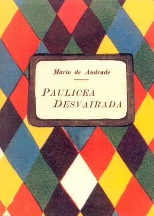
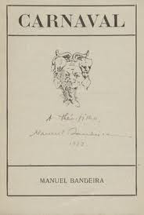

Acervo Literário

Paulicea Desvairada
Mário de Andrade
- 1922

Carnaval
Manuel Bandeira
- 1918
Pau Brasil
Oswald de Andrade
- 1925
Entenda mais sobre a Música
Tico-Tico no Fubá
Esta famosa composição de choro é um exemplo de como a música popular brasileira estava evoluindo e se preparando para a modernização. A obra ganhou notoriedade internacional e reflete a crescente inovação na música brasileira.
Chôros No. 1
A série de peças "Chôros" de Villa-Lobos reflete uma fusão de influências europeias e brasileiras, marcando o início de sua contribuição ao modernismo musical.
Odeon
Esta peça é um dos trabalhos mais icônicos de Ernesto Nazareth, famosa por sua melodia cativante e sua complexidade harmônica. "Odeon" exemplifica a habilidade de Nazareth em combinar elementos do choro com influências mais modernas, refletindo uma tendência à inovação que seria característica do Modernismo.